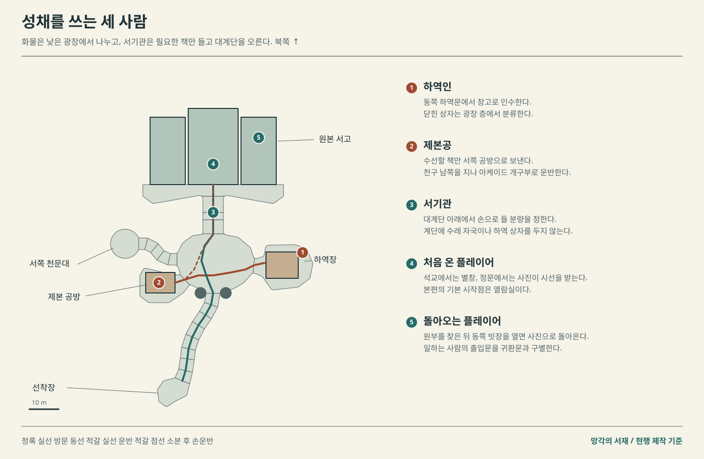
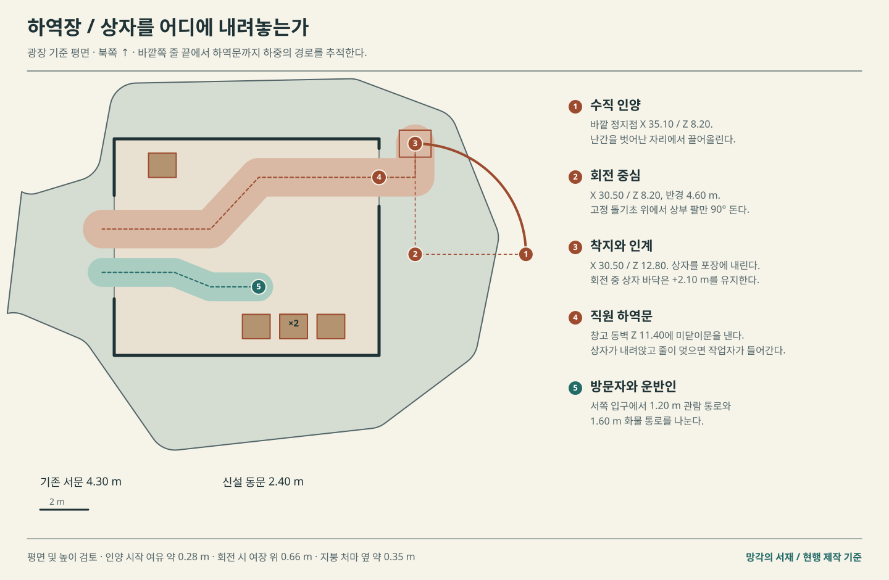
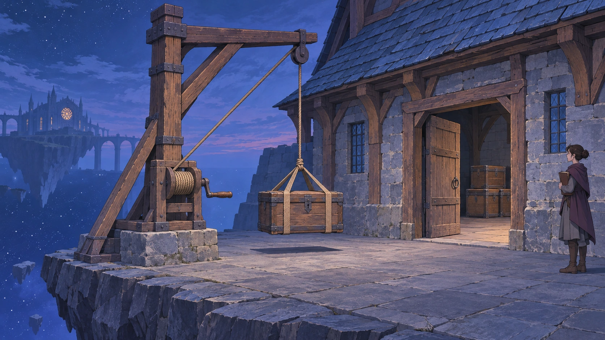
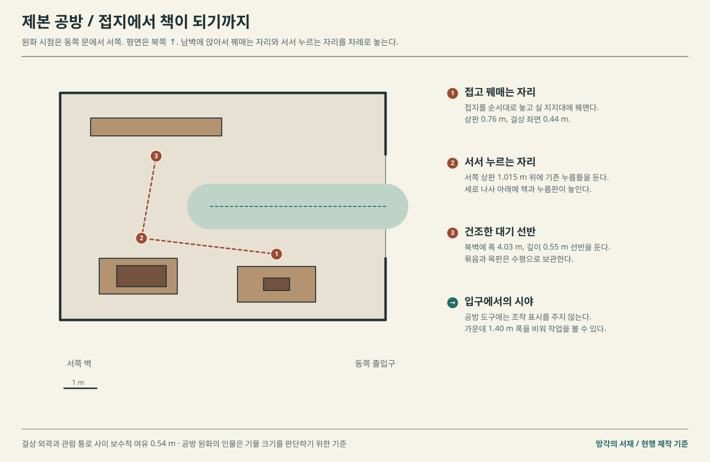
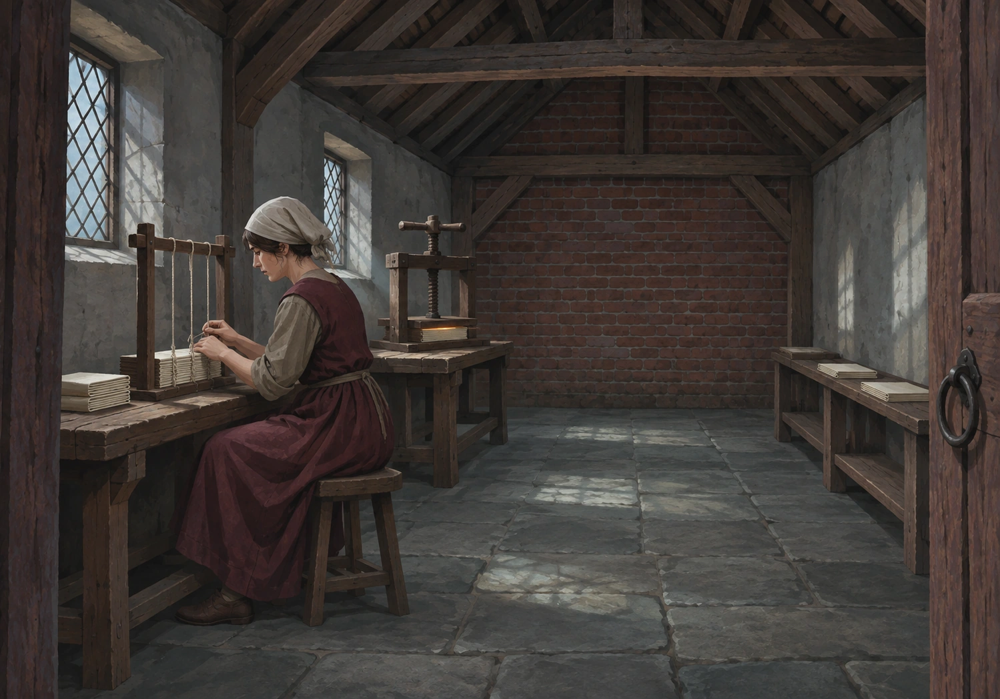
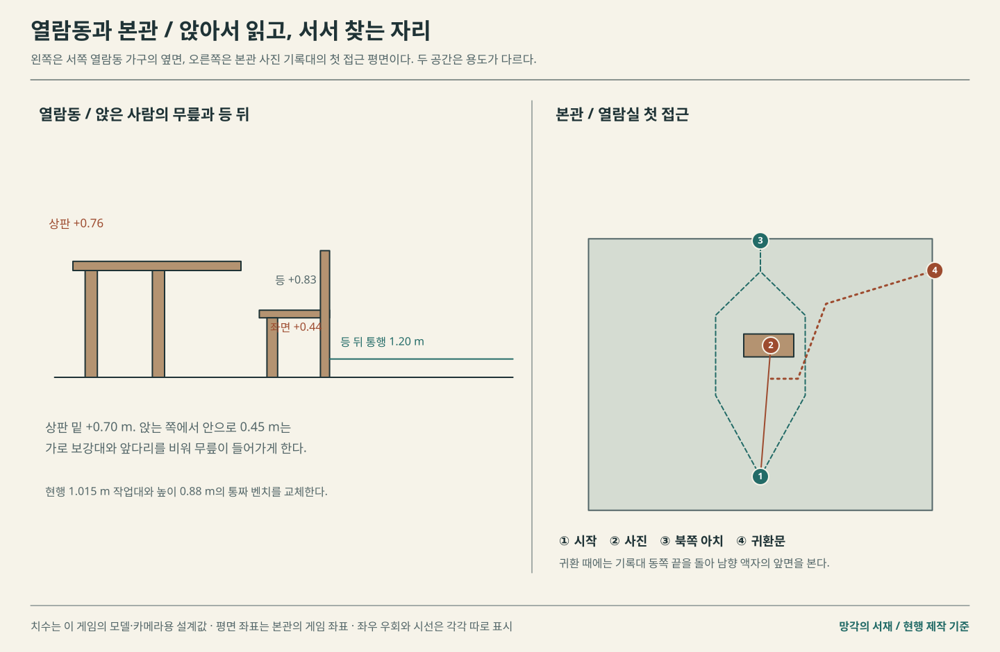
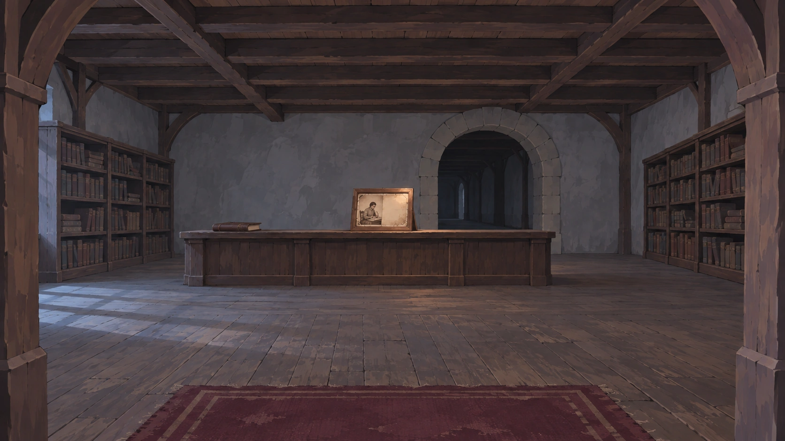
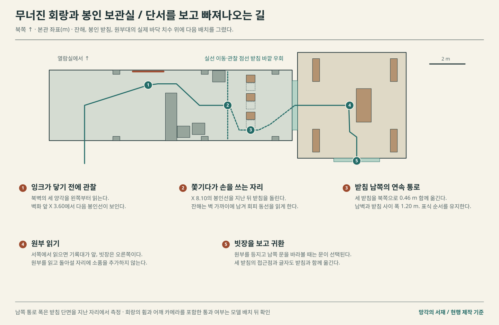

누가 어느 쪽에서 쓰는가
도구 옆에 손과 발의 자리, 사용할 물건의 출발점과 도착점을 표시한다. 공중에서 멈추는 상자는 착지점과 다음 운반인이 정해질 때까지 배치를 보류한다.
책 한 상자가 도착한다. 하역인은 어디에 내려놓고, 제본공은 어느 자리에서 고치며, 서기관은 어디에 앉아 읽을까. 같은 길을 걷는 플레이어에게는 별창, 사진, 봉인문이 차례로 보여야 한다.
현행 맵 제작 기준 · 게임과 도면은 citadel-construction.json의 workLayout 참조로 같은 원본을 읽는다.
수선할 책은 광장 남쪽을 가로질러 제본 공방으로 들어간다. 돌계단을 오를 때에는 사람이 몇 권씩 나른다. 그래서 계단참에는 쌓인 상자와 수레를 놓을 이유가 없다. 중앙 천구의 둘레도 비워 둔다.
선착장에서 시작하면 쌍탑이 길을 잡고 높은 별창이 목적지를 알린다. 열람실에서 시작하면 작은 사진이 첫 목적지다. 돌아올 때에는 동쪽 빗장 너머에서 같은 기록대의 옆모습을 알아본다. 사진이 복원되는 순간까지 주변 창을 한꺼번에 밝히지 않는다.
도구 옆에 손과 발의 자리, 사용할 물건의 출발점과 도착점을 표시한다. 공중에서 멈추는 상자는 착지점과 다음 운반인이 정해질 때까지 배치를 보류한다.
입구에서 처음 보는 대상과 거기서 갈 두 번째 지점을 지정한다. 봉인문 앞에서는 바라보는 문이 우선이며 등 뒤 원부의 조작 표시가 끼어들면 다시 배치한다.
실물에서 확인한 쓰임, 게임을 위해 정한 치수, 세계관의 마법을 구별해 기록한다. 꿰매는 공정은 실물 자료를 따르고, 기억을 되살리는 사진에는 별도의 서사적 이유를 둔다.
눌리는 힘은 나사와 누름판으로, 당기는 힘은 밧줄과 받치는 기초로 읽혀야 한다. 손때는 손잡이에, 마모는 운반 방향의 돌바닥에 둔다.
화면을 작게 줄이고 색을 빼도 첫 목표가 읽히는지 본다. 장식의 밝은 윤곽이 사진·별창·조작 표식보다 먼저 보이면 면적이나 반사를 줄인다. 공방 기물에는 발광과 상호작용 테두리를 주지 않는다.
양쪽 어깨 시점, 달리며 비스듬히 진입, 소품 위 점프, 이동 중 재도전을 그 위치에서 시험한다. 바닥과 난간은 한 경계선을 공유하고, 선반의 종이와 벽 장식에는 겹친 면을 만들지 않는다.







세 받침 남쪽 끝과 벽 사이의 기존 폭은 0.74 m다. 그림자를 피해 도달한 뒤 어깨너머 시점에서 받침 옆을 넉넉히 지나기 어려운 폭이다. 세 받침을 북쪽으로 0.46 m 함께 옮겨 남쪽에 1.20 m 통로를 둔다. 받침의 표식·선택 영역·충돌체도 같이 옮긴다.
벽화 앞에서는 세 양각과 동쪽의 봉인선이 차례로 보인다. 보관실은 서쪽에서 원부를 읽고 오른쪽으로 돌아 남쪽 빗장을 여는 구조다. 책상과 빗장 사이의 시야를 비우고, 새 기물의 광택이 단서의 닳은 황동보다 튀지 않게 한다.
하역기는 3.2초 인양, 3.6초 선회, 2초 하강하여 (30.5, 12.8) 포장에 착지한다. 고정 기초와 회전 팔을 분리했고, 동벽 2.40 m 미닫이문·이동 충돌체·체크포인트 복구를 연결했다. 하역 인물과 운반 애니메이션은 아직 없다.
공방은 박공지붕·0.76 m 봉철 작업대·걸상·북벽 수평 선반으로 바꿨다. 서쪽 열람동은 상판 0.76 m, 좌면 0.44 m, 등 0.83 m로 분리했다. 세 봉인 받침을 북쪽 0.46 m 옮겼고 모델·표식·진행 앵커가 같은 배치를 따른다. 본관 사진대와 진행 순서는 유지했다.
아래 제작 결정과 기존 문제는 변경 근거다. 현행 검사값 · 현행 치수와 배치표
화물의 수평 반대각선을 잡아 회전 시 방향이 바뀌는 경우도 포함했다. 인양 때 외곽선과 0.27 m 이상, 회전 중 처마와 0.35 m 이상, 착지 때 난간 안쪽과 0.42 m 이상의 여유를 확보했다. 선회 중 상자 바닥은 여장보다 0.66 m 높다.
제안한 두 통로의 가장자리는 창고 안에서 0.37 m 이상 떨어진다. 적재 상자는 두 통로 밖에 있고 위층 상자의 밑면은 아래 상자의 윗면에 닿는다. 공방 걸상의 바깥과 관람 통로 사이에는 0.54 m가 남는다. 이 수치는 게임 제작값이다.
상자 아래, 문 옆, 팔 받침 곁에서 1·3인칭으로 선회 전 구간을 본다. 플레이어가 화물에 올라타 봉인 구역을 건너거나 카메라가 지붕을 관통하면 배치를 재검토한다. 선회 중 재도전하면 복원 단계·줄·상자·충돌체가 함께 복구되는지 확인한다.
일반 시작 직후와 지름길로 돌아온 직후 같은 사진을 다시 찾는다. 좌우 시점에서 기록대 양끝을 지나고, 원부를 등진 채 빗장을 바라봐 올바른 상호작용만 뜨는지 본다. 얇은 종이·벽화·문틀은 비스듬히 걸으며 겹침과 깜빡임을 확인한다. 플레이 검증은 Orca 내장 브라우저에서 한다.